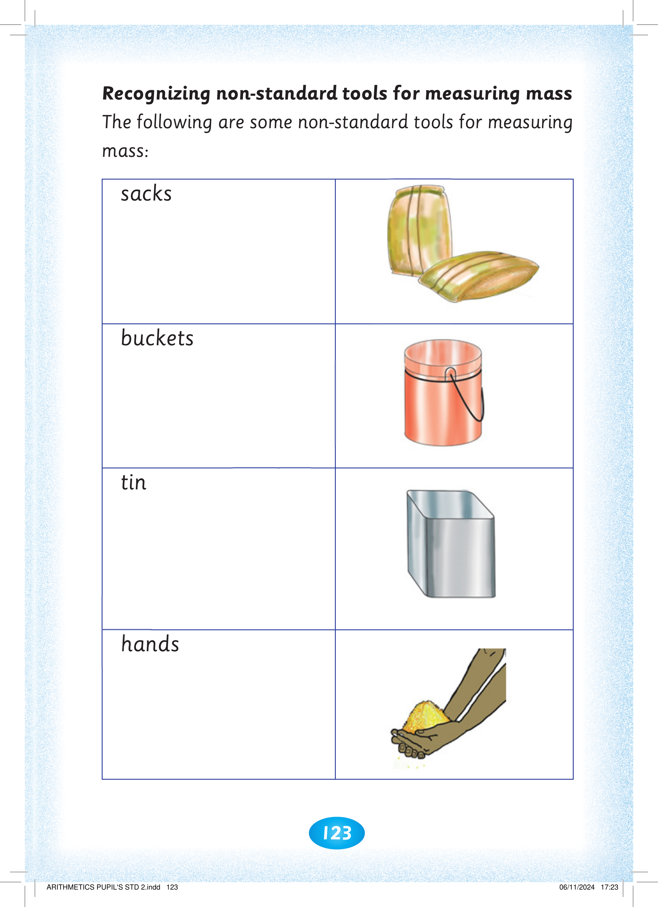
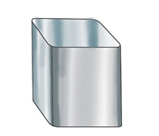
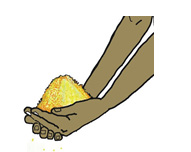

123

Recognizing non-standard tools for measuring mass. The following are some non-standard tools for measuring mass: sacks, buckets, a tin and hands. The pictures show two sacks, a metal bucket, an open tin container and two cupped hands holding grain.

The following are some non-standard tools for measuring

mass:
sacks

buckets

tin

hands



ARITHMETICS PUPIL'S STD 2.indd 123
06/11/2024 17:23